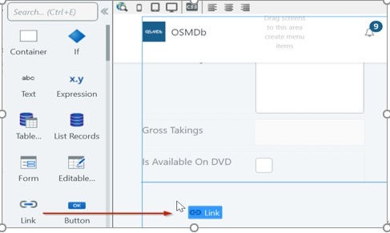

CoreモジュールからEntityを参照する
アプリのUI開発を開始前にやっておくこと
Web Responsiveモジュール（OSMDb）がCoreモジュールで定義されたDBEntityにアクセスできるようにしておく
➡このセクション場合はEntityをCoreモジュールからOSMDbモジュールにインポートである
これにより、できることは下記の通り。
- OSMDb_Coreモジュールで定義されているEntityを、OSMDbモジュールの［Manage Dependencies］ダイアログで参照。
- （OSMDbモジュール）
ツールバーのアイコンをクリック
［Manage Dependencies］ダイアログを開く。 - (［Manage Dependencies］ダイアログ)
［Show All］オプションがプロデューサのリストで選択確認。
その後、リストからOSMDb_Coreモジュールを選択。 - (Coreモジュールの公開要素リスト)
以前の演習で作成・公開した4つのEntityが表示されているはず
それらを全選択し、［OK］をクリック
ダイアログを閉じる。
- ワークスペースの右上にある［Data］タブをクリック
Data要素を表示します。
Coreモジュールから参照されるEntityを、現在のモジュールで利用可能となる。 - ［1-Click Publish］ボタンを使用してモジュールをパブリッシュ
サーバーがモジュール間の依存関係をコミット
Movies画面を作成
この演習では、映画リスト画面を表示作成する。
これらの映画は、DB（具体的にはMovieEntity）から取得。
※Service Studioで定義されたDBEntityからでないと映画を取得できないという意味ではない。
必要に応じて、他のソース（外部DB、Webサービスなど）からも取得可能。
Movies画面を作成するには、複数の手順を踏む必要がある。
- HomeScreenを実際に新しいMovies画面にする準備を行う。
- 画面のPreparationを使用してDBから映画データを取得。
-
(Preparationのクエリ結果)
ソースレコードリスト設定画面のTable Recordsウィジェットを使用し、
映画リストを表示 -
既存のHomeScreenを使用して、Movies画面を作成。
画面名前を変更後に「“Hello World”」メッセージを削除。- ワークスペースの右上にある［Interface］タブに切り替え、MainFlowを展開。
- ［HomeScreen］をクリック＞名前を「Movies」に変更
- Movies画面をダブルクリック>キャンバスで開く。
-
キャンバスで「“Hello from the OSMDb app”」式を右クリック
［Delete］オプションを選択
-
MovieEntityから全の映画を取得するために、Movies画面内にPreparationを作成。
Preparationとは？
面構築時に必要なデータを揃えておく為に、画面描画前に実行される特別アクションのこと-
［Elements］領域でMovies画面を右クリック＞［Add Preparation］を選択。
(備考)エディタでPreparationフローが自動的に開く
-
AggregateをStartとEndの間のフローにドラッグして、フローリンク。
(備考)
Aggregateがフローに接続され、「Aggregate1」になっている。
下記2つがいずれも赤色に変化していることに注目
- 緑色の［1-Click Publish］ボタン
- ［TrueChange］タブにある緑色のチェックマーク
これはAggregate1にマウスポインタを合わせると、
Aggregateを有効にするには1つ以上のEntityを含める必要がある旨を知らせするヒント表示である - Aggregate1をダブルクリック>Aggregateエディタで開く。
-
［Data］タブに切り替え、MovieEntityをキャンバスにドラッグ&ドロップ。
DB（MovieEntity）から全映画を取得するAggregateが設定。
これでデータ用意は完了となる
(備考)
MovieEntityをAggregateにドラッグ&ドロップ＞Aggregateには自動的に「GetMovies」という名前が付けられる
-
［Elements］領域でMovies画面を右クリック＞［Add Preparation］を選択。
-
次は、Movies画面のコンテンツ作成とDB内の映画全リストを表示。
次の作業は以下の通り。- UI画面のタイトルを「Movies」と定義。
- 画面にTableRecordsを追加
- GetMovies Aggregateにバインド
- IdとIsAvailableOnDVDを除く全アトリビュート列を表示
- ［Interface］タブに切り替え、Movies画面をダブルクリックで開く
-
画面の［Title］領域に「Movies」と入力
-
ツールボックスにあるTable Recordsウィジェットを画面の［Main Content］領域にドラッグ&ドロップ。
備考
Table Recordsが「TableRecords1」になり、赤色強調表示。
Table Recordsに有効値を含めるには必ずSource Record Listプロパティが必要→［TrueChange］タブにエラー表示。
-
プロパティエディタで［Source Record List］ドロップダウンをクリックし、
サジェスチョンの中からGetMovies.Listを選択。
→GetMoviesクエリの結果がTableRecordsに表示するデータソースになるように定義される。
(サジェスチョンとは？)プラットフォームの便利機能のこと
下記いくつかを強調表示する
- スコープ内の変数のうち入力先のプロパティ
- データ型の適合するもの
(重要)必ずサジェスチョンを確認し、プロパティに適切な値かどうかを要検討。
※候補リストの中に正しい値がない場合の対処方法
- ［(Expression Editor…)］を使用
- 目的値を定義する
-
［Data］タブを選択し、MovieEntityをTable Records（「Drag entities or attributes here」と表示されている場所）にドラッグ&ドロップ。
これは、映画データをTable Recordsに表示する際のレイアウト作成するためのアクセラレータである。
備考
Table Recordsを定義するプロセスには2つの手順で定義が必要。
- Source Record Listプロパティでウィジェットのソースデータ
-
データ表示する際のレイアウト画面。
※これは先ほどの手順で行った処理のこと。
-
Table Recordsに映画データが表示されるようになった。
備考
TableRecords：構成使用するEntityの最初の4つのアトリビュートがデフォルト表示
※Idは除外。アトリビュート列は、必要に応じて追加/削除可能。
(画面幅不足の場合)全列表示されないこともある⇒画面最大化を試すとよい。
-
新規更新をサーバーにパブリッシュし、下記2つの事項を確認する。
- Movies画面にアクセスできること
- 全映画表示されていること
- ［1-Click Publish］ボタン をクリック>、モジュールをサーバーにパブリッシュ。
-
アプリが正常にパブリッシュされたことを［1-Click Publish］タブで確認し、
［Open in Browser］ボタンをクリック。 - ブラウザには以下のように表示される。
MovieDetail画面を作成する
(このセクションで作るもの）
Formを使用して、特定の映画詳細表示するための詳細画面。
そのためには、画面のPreparationで、Aggregateを使用してDBから映画取得する必要がある。
このAggregateは、画面表示する映画IDでフィルタリングされる。
そのIDが画面のInputパラメータとなる。
必要に応じてリストに戻れるように、MovieDetail画面とMovies画面の間にリンクを追加
Movies画面に、各映画とそれに該当するMovieDetail画面をつなぐリンクを追加し、詳細データ表示が出来るようにする。
-
Empty画面テンプレートを使用してMovieDetail画面を作成し、［Anonymous］に設定。
- Interface］タブに切り替え、MainFlowをダブルクリックで開く。
- 新しいWeb ScreenをMovies画面の下にドラッグ&ドロップ。
-
新しいウィンドウでEmptyテンプレートを選択し、
画面に「MovieDetail」という名前を設定。［Create Screen］ボタンをクリック。 - AnonymousロールでMovieDetail画面にアクセス出来るようにする。
-
MovieDetail画面に映画詳細表示するには、表示対象の特定映画を取得する必要がある。
そのために、IDでフィルタリングを行って映画取得するAggregateを含むPreparationを作成。
画面の入力パラメータは、Movie Idである。
-
［Elements］領域でMovieDetail画面を右クリック
［Add Input Parameter］を選択＞「MovieId」という名前を設定。
Input ParameterのData Typeが「Movie Identifier」に変更され、
IsMandatoryが［Yes］に設定されていることを確認。
画面に必須入力パラメータがある場合
サーバーに画面リクエストがあるたびに、入力パラメータに値を渡す必要がある。
- MovieDetail画面を右クリックし、［Add Preparation］を選択。
-
［Data］タブ＞MovieEntityをPreparationフローにドラッグ&ドロップ。
※DBから全映画取得するAggregateが作成。⇒Movies画面のAggregateと同様のAggregateを作成するためのアクセラレータである。
-
入力パラメータのIDと一致する映画のみを取得するには、Aggregateを変更する必要がある。
GetMoviesをダブルクリックでエディタを開く。 - ［Filters］オプションを選択＞エディタの［FILTERS］セクションを開く
- ［+Add Filter］をクリックでAggregateにフィルタを追加。⇒フィルタ条件を追加するための式エディタが開く。
-
新しいダイアログで、式を「Movie.Id = MovieId」に設定。
［Done］ボタンをクリック>エディタを閉じる。
⇒ID（Movie.Id）がMovieId入力パラメータと等しい映画がDBから映画が選択可能となった。
(式)直接入力や式エディタの左下にあるダイアログで要素を選択入力することも可能
ダイアログを使用する方法
- Movieを展開
- Idアトリビュートをダブルクリック
- ［=］ボタンをクリック
- Locals（変数）を展開してMovieIdをダブルクリック
- Aggregateの名前が「GetMovies」から「GetMovieById」に変更。
-
-
MovieDetail画面のタイトルが、GetMovieByIdで取得した映画名になるように設定。
(変化)MovieDetail画面を表示時に、どの映画を調べているかが明確化
- ［Interface］タブに切り替え、MovieDetail画面をダブルクリックで開く。
-
Expressionを［Title］領域にドラッグでそのまま保持。
［Elements］領域にウィジェットツリーが表示され、［Title］領域が点滅。3
-
式には有効値設定する必要がある。
Locals（変数）を展開してMovieIdをダブルクリックでエディタを開く。
- 式のValueプロパティをダブルクリック>、［Expression Value］ダイアログを開く。
-
［Expression Value］ダイアログで、以下の式を入力。
GetMovieById.List.Current.Movie.Title
➡reparationで定義したAggregateから返される映画タイトルを使用。
これは1つのみであるため、デフォルトで出力の最初の要素を指すCurrentプロパティを使用してアクセス可能。
［Done］をクリックで終了。
備考
前述の式を追加する方法
- 左下のダイアログでPreparationフォルダを展開
- Aggregateの出力から［GetMovieById > List > Current > Movie］を選択。
- Titleアトリビュートをダブルクリック
-
前手順で作成したAggregateをソースとして使用>映画詳細を表示するFormを作成。
Idを除く全のMovieアトリビュートを表示するように設定。幅は8列にする。- FormウィジェットをMovieDetail画面の［MainContent］領域にドラッグ&ドロップ。
-
Formのプロパティエディタで［Source Record］ドロップダウンをクリックでGetMovieById.List.Currentを選択。
GetMovieById Aggregateから取得された映画レコードが表示
FormがAggregateの出力にバインドされる
(備考)全Formにソースレコードを設定する必要がある。未設定だとエラーが発生
- Formの幅を広げるために、右側のエンドポイントを［8 col］までドラッグ。
-
［Data］タブを開き、MovieEntityを展開
YearアトリビュートをFormにドラッグ&ドロップでContainerが作成。
現時点で映画のYearに対応するウィジェットは以下の通りである。
- Label
-
Input（テキスト入力フィールド）
⇒（テキスト入力フィールド配置方法）Labelウィジェットの下に仮配置後、Labelの横に配置
-
キャンバスでContainer要素にマウスポインタを合わせて、［MovieForm］を選択。
MovieFormのLabel Positionプロパティの値を「Left Aligned」に変更。
※視力が悪い方のために画像にある文字を拡大してます。 -
MovieFormのLabel Positionプロパティの値を「Left Aligned」に変更。
(備考)
（この時点でのモジュール表示）サーバーへの入力未送信を知らせる警告。
今のところ、この画面は映画データの表示のみに使用されるため、この警告は無視してOK。
※後の演習で対処する。
- キャンバスで、Movie_Year入力ウィジェットを選択。
-
そのNull Valueプロパティを「0」に変更。
※エンドユーザーが年を指定しなかった場合はFormのYearにある Null Value を「0」にしておくということ。
-
［Data］タブに切り替え、MovieEntityのPlotSummaryアトリビュートをMovieFormにドラッグ&ドロップ。
(備考)
既存のアトリビュートに重ねるようにアトリビュートをドロップした場合、既存のアトリビュートのすぐ下に配置となる。
-
再度、下記アトリビュートをFormにドラッグ&ドロップ。
- GrossTakingsAmount
- IsAvailableOnDVD
- Gross Takings InputウィジェットのNull Valueプロパティを「0」に設定。
-
MovieFormは以下のようになる。
IsAvailableOnDVDの入力はチェックボックス。⇒このアトリビュートがBooleanとして定義されているため。
デフォルトについて
PlotSummaryの入力はMaximum Lengthが500に定義されてるため、下記どれかの入力よりも大きくなる
- Year
- GrossTakingsAmount
-
下記の通りに設定する。
対象設定 変更内容 Text Lines 4 Movie_PlotSummary 入力サイズを増大
-
LinkをMovieFormの下にドラッグ&ドロップ。
 -
入力フォーカスを移動させずに、リンク内に「Back to list」と入力。
［TrueChange］パネルのエラー表示対処方法
- リンクには、ユーザーがリンクをクリックした場合に備えて宛先を設定する必要
- Required Property Valueエラーをダブルクリック。
- フォーカスがエラーの場所に移動。

-
下記いずれかで設定
- ドロップダウンから［(Select Destination…) ］を選択する
- Destinationプロパティをダブルクリック。
-
［(Select Destination)］ダイアログでMainFlowを展開し、Movies画面をダブルクリック。
⇒ユーザーがリンククリック時に、Movies画面に移動するようになる。
8) Formの下に、People画面に戻るためのリンクを作成
※文章が６～７が抜けている- LinkをPersonFormの下にドラッグ&ドロップ
- 入力フォーカスを移動させずに、リンク内に「Back to list」と入力
- キャンバスでBack to listテキストにマウスポインタを合わせて、Link要素を選択
下記いずれかで設定
- Linkプロパティで、ドロップダウンから［(Select Destination…) ］を選択
- Destinationプロパティをダブルクリック
- ［(Select Destination)］ダイアログでMainFlowを展開し、People画面をダブルクリック。

- ［Interface］タブで、People画面をダブルクリックで開く
- PersonTableの［Name］列で人物名を選択し⇒［Link to MainFlow\PersonDetail Web Screen］オプションを選択
9) 次に、人物名をクリック>新しいPersonDetail画面にアクセスし、その人物情報を編集できるよう、
People画面からPersonDetail画面への移動を可能化する。
下記手順を行う
- ［1-Click Publish］ボタン をクリック
- モジュールをサーバーにパブリッシュ
- モジュールが正常にパブリッシュされたことを［1-Click Publish］タブで検証
- ［Open in Browser］ボタン をクリック。するとMovies画面が表示。
- People画面に移動します。PersonDetail画面へのリンクが表示
- People画面に表示された名前をクリックし、PersonDetail画面に正しく移動するかどうかを確認
- ［Back to list］リンクをクリック>、People画面に戻る
新規更新をサーバーにパブリッシュし、OSMDbアプリに対して行われた更新をテスト
演習終了
(この章でやったこと）DB内の映画および人物について、リストと詳細画面を作成
- 各画面に示する関連データを取得するために、画面のPreparationとAggregateを定義するところから画面作成を開始
- able RecordsとFormを使用して、情報をブラウザに表示するレイアウトを定義
- エンドユーザーがアプリ内を移動しやすくするために、画面間のリンクを作成
- トップメニューには各画面へのリンクも追加作成
↑以前の演習で作成したEntityを利用し、映画および人物のデータを全表示できる簡単なアプリができた